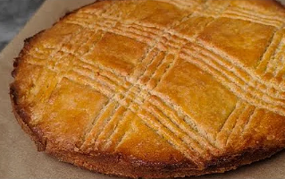

Breton Cake

Ingredients
- 150 g salted butter, softened
- 150 g sugar
- 3 egg yolks
- 250 g flour
Steps:
- Start by putting the butter in a bowl. Add the sugar and mix thoroughly.
- Then add the egg yolks, one at a time, mixing thoroughly for each. Save some of it to use as an egg wash.
- Similarly, add the flower a bit at a time and incorporate completely.
- Transfer the dough to a greased/buttered cake mold, about 20 cm in diameter.
- Pack the dough down to get a relatively flat and smooth surface. Use a fork to create lines.
- Dilute the leftover egg yolk with a bit of water and apply as egg wash.
- Preheat the over to 180 degrees C and bake for 40 minutes
Back to the main page